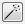

The Mosaic
operation is used
to create a
mosaic from a set of rasters. Image mosaic refer to that multi images,
which are shot in
the same or different shooting condition and have overlapped
regions, are stitched and combined to a image to enlarge the
field of vision that a image can cover. The
available methods in TerraLib
are:
It is accessible through:
Raster Processing > Mosaic... (list of all raster layers will be available)
This wizard consists of the following steps:
- Geo Mosaic: Create a mosaic from a set of geo-referenced rasters.
- Tie Points Mosaic: Create a mosaic from a set of rasters using tie-points over each adjacent rasters pair.
- Sequence Mosaic: Create mosaics from a sequence of overlapped rasters using an automatic tie-points detection method.
It is accessible through:
Raster Processing > Mosaic... (list of all raster layers will be available)
This wizard consists of the following steps:
Wizard Page 1 - Selection of the layers to mosaic (Layer Search)
- On the List of Layers select the raster layers to apply the mosaic.
- Optionally use Filter By Name field giving part of the layer name to help find the layer in the list.
- Press Next to go to next step or Cancel to close the dialog.
Wizard Page 2 - Mosaic parameters
- Select the Type of mosaic to be used and set their specific parameters.
- Geo Mosaic
- Tie Points Mosaic
- Layer A
- Layer B
- Geometric transformation
- Tie Points Link Type
- Use  tool to show the interface for the acquisition of tie points. This interface is the same used in the register operation.
- Sequence Mosaic
- Geometric Transformation
- Reference Band: The band used to locate tie-points.
- Minimum Required Tie Points: The minimum required tie-points covered area percent of each raster area - valid range [0,100] (default : 0).
- Tie Point Locator Parameters: This interface is the same used in the register operation.
- The common parameters are:
- Interpolator: The raster interpolator method.
- Blender: The pixel blending method.
- No Data:
- Value: The pixel value used where no raster data is available (default : 0).
- Force Input Value: If checked, no data value will be used as the no-data value for input rasters.
- Options
- Auto Equalize: Auto equalization will be performed using the overlaped image areas.
- Use Raster Cache
- Press Next to apply the contrast or Back to go to the previous wizard page.
Wizard Page 3 - Output information
- Raster Info
- First press
 and inform the folder where the resulting
file will be saved.
and inform the folder where the resulting
file will be saved. - Name - inform the raster name.
- Extra Parameters - if there are some, see the details on how to inform then here.
- Press Finish to save the resulting contrasted raster or Back to go to the previous wizard page.